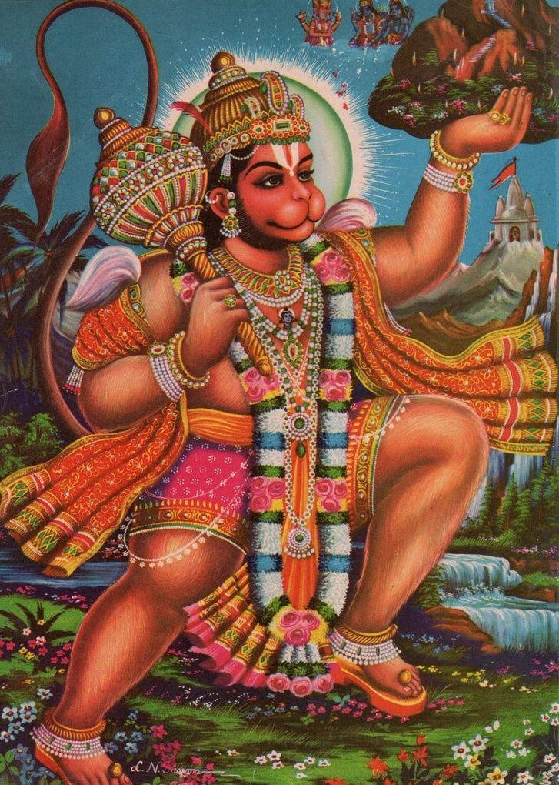

Sundarkanda Sarga 57
॥ॐ॥
मनोजवं मारुततुल्यवेगं जितेन्द्रियं बुद्धिमतां वरिष्ठम्।
वातात्मजं वानरयूथमुख्यं श्रीरामदूतं शरणं प्रपद्ये॥
Sundarakanda Sarga 57
Hanuman reaches the northern shore. Announces to vanaras, Angada and Jambavan about his seeing Sita. Every one rejoices to hear the news of Sita

(48 Shlokas)
स चन्द्रकुमुदं रम्यं सार्ककारण्डवं शुभम्।
तिष्यश्रवणकादम्बमभ्रशैवालशाद्वलम्॥5.57.1॥
Word-by-word meaning: सः he, चन्द्र-कुमुदम् the moon (in the sky) and water-lilies (in the ocean), रम्यम् delightful, स-अर्क-कारण्डवम् the sun (in the sky) and karandava birds (in the ocean), शुभम् beautiful, तिष्य-श्रवण-कादम्बम् the stars Tishya and Shravana (in the sky) and clusters of cranes (flying over the ocean), अभ्र-शैवाल-शाद्वलम् clouds (in the sky) and the mossy meadows (on the shores of the ocean)
Valmiki is comparing the beauty of the sky and the corresponding beauty of the ocean in the next four verses.
Anvay: सः चन्द्रकुमुदं सार्ककारण्डवं शुभं तिष्यश्रवणकादम्बम् अभ्रशैवालशाद्वलं …
Simple meaning: Hanuman flew through the beautiful sky and over the ocean, adorned respectively with the moon and water-lilies, the sun and karandava birds, the stars Tishya and Shravan and clusters of cranes, and clouds and mossy meadows…
पुनर्वसुमहामीनं लोहिताङ्गमहाग्रहम्।
ऐरावतमहाद्वीपं स्वातिहंसविलोलितम्॥5.57.2॥
Word-by-word meaning: पुनर्वसु-महामीनम् the constellation Punarvasu (in the sky) and a great fish (in the ocean), लोहिताङ्ग-महाग्रहम् the red planet (Mars in the sky) and a big crocodile (in the ocean), ऐरावत-महाद्वीपम् Airavata (the elephant of Indra in the sky) and a great island (on the ocean), स्वाति-हंसविलोलितम् Swati star (in the sky) and moving swans (in the ocean)
ग्रह - crocodile (also) src. Kosha. Ashtadyayi
Anvay: पुनर्वसुमहामीनं लोहिताङ्गमहाग्रहम् ऐरावतमहाद्वीपं स्वातिहंसविलोलितम्…
Simple meaning: …the constellation Punarvasu and the great fish, the red planet Mars and a big crocodile, Airavata and the islands, the Swati star and graceful moving swans…
वातसङ्घातजातोर्मि चन्द्रांशुशिशिराम्बुमत्।
भुजङ्गयक्षगन्धर्वप्रबुद्धकमलोत्पलम्॥5.57.3॥
Word-by-word meaning: वात-सङ्घात-जात-उर्मि storms of winds (in the sky) and waves produced by the wind (in the ocean), चन्द्र-अंशु-शिशिर-अम्बुमत् rays of moon (in the sky) and cool waters (in the ocean), भुजङ्ग-यक्ष-गन्धर्व-प्रबुद्ध-कमल-उत्पलम् nagas, yakshas, gandharvas (in the sky) and fully blossomed lotuses (in the ocean)
Anvay: …वातसङ्घातजातोर्मि चन्द्रांशुश्शिराम्बुमत् भुजङ्गयक्षगन्धर्वप्रबुद्धकमलोत्पलम् …
Simple meaning: …the storms of wind and the mighty waves produced by those winds, the rays of the moon and the cool waters, the hoards of nagas, yakshas, gandharvas and fully blossomed lotuses…
हनुमान्मारुतगतिर्महानौरिव सागरम्।
अपारमपरिश्रान्तः पुप्लुवे गगनार्णवम् ॥5.57.4॥
Word-by-word meaning: हनुमान् Hanuman, मारुत-गतिः with the speed of the wind, महा-नौः huge boat, इव like, सागरम् the ocean, अपारम् boundless, अपरिश्रान्तः unwearied, पुप्लुवे flew across, गगन-अर्णवम् the sky like ocean (the sky which resembled the ocean)
Anvay: …अपारं सागरं महानौः इव गगनार्णवम् अपरिश्रान्तः हनुमान् मारुतगतिः पुप्लुवे।
Simple meaning: …like a huge boat crossing the boundless ocean, Hanuman, with the speed of wind, flew in the sky unwearied.
ग्रसमान इवाकाशं ताराधिपमिवोल्लिखन्।
हरन्निव सनक्षत्रं गगनं सार्कमण्डलम्॥5.57.5॥
Word-by-word meaning: ग्रसमानः swallowing, इव as if, आकाशम् the sky, तारा-अधिपम् the lord of stars (moon), इव as if, उल्लिखन् touching, हरन् taking away, इव as if, स-नक्षत्रम् with the stars, गगनम् the heavens, स-अर्क-मण्डलम् with the solar orb
Anvay: (सः हरिः) आकाशं ग्रसमानः इव, ताराधिपम् उल्लिखन् इव, सनक्षत्रं सार्कमण्डलं गगनं हरन् इव (पुप्लुवे)।
Simple meaning: Hanuman seemed to swallow the sky, to touch the moon, and to seize the heavens along with the sun and stars as he leapt through the air.
मारुतस्यात्मजः श्रीमान्कपिर्व्योमचरो महान्।
हनुमान्मेघजालानि विकर्षन्निव गच्छति॥5.57.6॥
Word-by-word meaning: मारुतस्य of the Wind-God, आत्मजः son, श्रीमान् splendid, कपिः monkey, व्योम-चरः moving through the sky, महान् mighty, हनुमान् Hanuman, मेघ-जालानि masses of clouds, विकर्षन् dragging apart, इव as if, गच्छति goes
Anvay: मारुतस्य आत्मजः श्रीमान् महान् व्योमचरः कपिः हनुमान् मेघजालानि विकर्षन् इव गच्छति।
Simple meaning: The splendid Hanuman, mighty son of the Wind-God, moved through the sky like a great being, as if he were tearing apart the masses of clouds.
पाण्डुरारुणवर्णानि नीलमाञ्जिष्ठकानि च।
हरितारुणवर्णानि महाभ्राणि चकाशिरे॥5.57.7॥
Word-by-word meaning: पाण्डुर-अरुण-वर्णानि white and reddish in hue, नील-माञ्जिष्ठकानि dark-blue and crimson, च and, हरित-अरुण-वर्णानि green and red, महा-अभ्राणि great clouds, चकाशिरे shone
Anvay: पाण्डुरारुणवर्णानि नीलमाञ्जिष्ठकानि हरितारुणवर्णानि महाभ्राणि चकाशिरे।
Simple meaning: The great clouds shone in hues of white and red, dark-blue and crimson, and green mixed with red.
प्रविशन्नभ्रजालानि निष्पतंश्च पुनः पुनः।
प्रच्छन्नश्च प्रकाशश्च चन्द्रमा इव लक्ष्यते॥5.57.8॥
Word-by-word meaning: प्रविशन् entering, अभ्रजालानि masses of clouds, निष्पतन् emerging, च पुनः पुनः again and again, प्रच्छन्नः च and hidden, प्रकाशः च and visible, चन्द्रमाः the moon, इव like, लक्ष्यते appears
Anvay: पुनः अभ्रजालानि प्रविशन् च, पुनः निष्पतन् च – प्रच्छन्नः प्रकाशः च चन्द्रमाः इव – लक्ष्यते।
Simple meaning: As Hanuman kept entering and emerging repeatedly through the dense masses of clouds during his flight, he appeared alternately hidden and visible—just like the moon covered and uncovered by clouds.
विविधाभ्रघनापन्नगोचरो धवलाम्बरः।
दृश्यादृश्यतनुर्वीरस्तदा चन्द्रायतेऽम्बरे॥5.57.9॥
Word-by-word meaning: विविध-अभ्र-घन-आपन्न-गोचरः moving through different kinds of cloud masses enveloping, धवल-अम्बरः Hanuman who was clad in white, दृश्य-अदृश्य-तनुः whose (body) was appearing and disappearing, वीरः the mighty one, तदा then, चन्द्रायते acting like a moon, अम्बरे in the sky
चन्द्रायते is a derived verb by itself. Means to act like a moon. चन्द्राय is the verb, चन्द्रायते is आत्मनेपदि लट् 1.1
Anvay: तदा धवलाम्बरः वीरः विविधाभ्रघनापन्नगोचरः दृष्ट्यदृष्टितनुः अम्बरे चन्द्रायते।
Simple meaning: The mighty Hanuman clad in white, moved through regions filled with various dense clouds, sometimes visible and sometimes hidden, acting like a moon in the sky.
तार्क्ष्यायमाणो गगने बभासे वायुनन्दनः।
दारयन्मेघबृन्दानि निष्पतंश्च पुनः पुनः।
नदन्नादेन महता मेघस्वनमहास्वनः॥5.57.10॥
Word-by-word meaning: तार्क्ष्यायमाणः flying swiftly like Garuda, गगने in the sky, बभासे shone, वायु-नन्दनः son of the wind (Hanuman), दारयन् tearing apart, मेघ-बृन्दानि clusters of clouds, निष्पतन् disappearing, च and, पुनः पुनः again and again, नदन् roaring, नादेन with sound, महता great, मेघ-स्वन-महास्वनः producing a roar like thunder
Anvay: मेघबृन्दानि दारयन् निष्पतन् च पुनः पुनः, महता नादेन नदन् मेघस्वनमहास्वनः वायुनन्दनः गगने तार्क्ष्यायमाणः बभासे।
Simple meaning: Tearing through the clusters of the clouds, disappearing again and again, roaring with a loud sound, he who was producing a roar like thunder, appeared like Garuda in the sky.
प्रवरान्राक्षसान् हत्वा नाम विश्राव्य चात्मनः।
आकुलां नगरीं कृत्वा व्यथयित्वा च रावणम्॥5.57.11॥
Word-by-word meaning: प्रवरान् eminent, राक्षसान् rakshasas, हत्वा after killing, नाम name, विश्राव्य having made known, च and, आत्मनः his own, आकुलाम् agitated, नगरीम् city, कृत्वा having made, व्यथयित्वा having distressed, च and, रावणम् Ravana
Anvay: प्रवरान् राक्षसान् हत्वा, आत्मनः नाम विश्राव्य च, नगरीम् आकुलां कृत्वा, रावणं च व्यथयित्वा...
Simple meaning: After killing the mighty rakshasas, proclaiming his own name, agitating the city, and distressing Ravana…
अर्दयित्वा बलं घोरं वैदेहीमभिवाद्य च।
आजगाम महातेजाः पुनर्मध्येन सागरम्॥5.57.12॥
Word-by-word meaning: अर्दयित्वा having subdued, बलम् army, घोरम् terrific, वैदेहीम् Sita, अभिवाद्य after paying respects, च and, आजगाम proceeded, महा-तेजाः glorious, पुनः again, मध्येन through the middle, सागरम् the ocean
Anvay: घोरं बलम् अर्दयित्वा वैदेहीम् अभिवाद्य च पुनः सागरं मध्येन आजगाम।
Simple meaning: …having subdued the terrific army, after paying respects to Sita, glorious Hanuman again coursed over the ocean.
पर्वतेन्द्रं सुनाभं च समुपस्पृश्य वीर्यवान्।
ज्यामुक्त इव नाराचो महावेगोऽभ्युपागतः॥5.57.13॥
Word-by-word meaning: पर्वत-इन्द्रम् the lord of mountains, सुनाभम् Sunabha (another name for Mount Mainaka), च and, समुपस्पृश्य having touched fondly, वीर्यवान् mighty, ज्यामुक्तः released from the bowstring, इव नाराचः as if, an arrow, महा-वेगः with great speed, अभ्युपागतः went
Anvay: पर्वतेन्द्रं सुनाभं च समुपस्पृश्य, ज्यामुक्तः नाराचः इव महावेगः अभ्युपागतः।
Simple meaning: The mighty Hanuman, having touched the lord of the mountains Mainaka fondly, sped ahead with great speed, like an arrow released from a bowstring.
स किञ्चिदनुसम्प्राप्तः समालोक्य महागिरिम्।
महेन्द्रं मेघसङ्काशं ननाद हरिपुङ्गवः॥5.57.14॥
Word-by-word meaning: सः he, किञ्चित् a little, अनुसम्प्राप्तः having approached, समालोक्य having looked around, महा-गिरिम् the great mountain, महेन्द्रम् lord of mountains, मेघ-सङ्काशम् like a cloud, ननाद resounded, हरि-पुङ्गवः the chief of monkeys (Hanuman)
Anvay: सः हरिपुङ्गवः मेघसङ्काशं महागिरिं महेन्द्रं किञ्चित् अनुसम्प्राप्तः, समालोक्य, ननाद।
Simple meaning: The chief of monkeys, Hanuman, having approached a little closer to the great lord of the mountains resembling a cloud, beholding it gave a loud roar.
स पूरयामास कपिर्दिशो दश समन्ततः।
नदन्नादेन महता मेघस्वनमहास्वनः॥5.57.15॥
Word-by-word meaning: सः he, पूरयामास filled, कपिः the monkey, दिशः directions, दश ten, समन्ततः from all sides, नदन् roaring, नादेन with sound, महता great, मेघ-स्वन-महास्वनः producing a roar like thunderclouds
Anvay: सः कपिः मेघस्वनमहास्वनः महता नादेन नदन्, दश दिशः समन्ततः पूरयामास।
Simple meaning: Hanuman filled all ten directions, roaring mightily with a sound as thunderous as that of storm clouds.
स तं देशमनुप्राप्तः सुहृद्धर्शनलालसः।
ननाद हरिशार्दूलो लाङ्गूलं चाप्यकम्पयत्॥5.57.16॥
Word-by-word meaning: सः he, तम् that, देशम् region, अनुप्राप्तः having reached, सुहृत्-दर्शन-लालसः eager to see his friends, ननाद resounded, हरि-शार्दूलः the tiger among monkeys (Hanuman), लाङ्गूलम् tail, च and, अपि also, अकम्पयत् shook
Anvay: हरिशार्दूलः सः तं देशम् अनुप्राप्तः, सुहृद्धर्शनलालसः ननाद, लाङ्गूलं च अपि अकम्पयत्।
Simple meaning: Hanuman, the tiger among monkeys, having reached that region, eager to see his friends, roared mightily and also shook his tail.
तस्य नानद्यमानस्य सुपर्णचरिते पथि।
फलतीवास्य घोषेण गगनं सार्कमण्डलम्॥5.57.17॥
Word-by-word meaning: तस्य of him, नानद्यमानस्य resounding, सुपर्ण-चरिते on the flight path of Suparna (Garuda), पथि path, फलति इव splitting as it were, अस्य of him, घोषेण with noise, गगनम् the sky, स-अर्क-मण्डलम् the solar orb
फल् फल् 'भ्वा . पर . फलति , फुल्ल या फुल्त ' - 'बलपूर्वक तोड़ना,खंड-खंड करना,फट जाना,दरार पड़ना' src. Kosha. Ashtadhyayi
Anvay: सुपर्णचरिते पथि तस्य नानद्यमानस्य, अस्य घोषेण सार्कमण्डलं गगनं फलति इव (आसीत्)।
Simple meaning: Along the flight paths of Suparna (in the sky), resounding cries of Hanuman filled the sky, as it were splitting the sky along with solar system.
ये तु तत्रोत्तरे तीरे समुद्रस्य महाबलाः।
पूर्वं संविष्ठिताश्शूरा वायुपुत्रदिदृक्षवः॥5.57.18॥
Word-by-word meaning: ये those, तु indeed, तत्र उत्तरे तीरे on that northern shore, समुद्रस्य of the ocean, महाबलाः mighty, पूर्वम् before, संविष्ठिताः stationed, शूराः warriors, वायु-पुत्र-दिदृक्षवः desirous of seeing the son of the Wind-God
Anvay: तत्र ये तु शूराः महाबलाः वायुपुत्रदिदृक्षवः समुद्रस्य उत्तरे तीरे पूर्वं संविष्ठिताः …
Simple meaning: The mighty vanaras, desiring to see the son of Wind-God, who were stationed on the northern shore of the ocean earlier…
महतो वातनुन्नस्य तोयदस्येव गर्जितम्।
शुश्रुवुस्ते तदा घोषमूरुवेगं हनूमतः॥5.57.19॥
Word-by-word meaning: महतः from great, वात-नुन्नस्य stirred by the wind, तोयदस्य the waters, इव like, गर्जितम् roared, शुश्रुवुः they heard, ते they, तदा then, घोषम् the roar, ऊरु-वेगम् with great speed of the thighs, हनूमतः of Hanuman
नुन्न (विशेषणम्) प्रेरितः src. Kosha. Ashtadhyayi
Anvay: तदा ते वातनुन्नस्य महतः तोयदस्य गर्जितम् इव हनूमतः ऊरुवेगं घोषं शुश्रुवुः।
Simple meaning: Then they heard the mighty sound which was made by the great speed of Hanuman’s thighs against the wind, which sounded like the thunder of the massive clouds stirred by the wind.
ते दीनमनसस्सर्वे शुश्रुवुः काननौकसः।
वानरेन्द्रस्य निर्घोषं पर्जन्यनिनदोपमम्॥5.57.20॥
Word-by-word meaning: ते they, दीन-मनसः distressed in mind, सर्वे all, शुश्रुवुः heard, कानन-ओकसः the forest dwellers, वानर-इन्द्रस्य of the monkey king, निर्घोषम् mighty roar, पर्जन्य-निनद-उपमम् like the sound of thunder
Anvay: ते सर्वे दीनमनसः काननौकसः पर्जन्यनिनदोपमं वानरेन्द्रस्य निर्घोषं शुश्रुवुः।
Simple meaning: All of them, the forest dwellers, distressed in mind, heard the mighty roar of the monkey king, sounding like rolling thunder.
निशम्य नदतो नादं वानरास्ते समन्ततः।
बभूवुरुत्सुकास्सर्वे सुहृद्धर्शनकाङ्क्षिणः॥5.57.21॥
Word-by-word meaning: निशम्य having heard, नदतः नादम् the resounding sound, वानराः the monkeys, ते they, समन्ततः from all sides, बभूवुः became, उत्सुकाः eager, सर्वे all, सुहृत्-दर्शन-काङ्क्षिणः desiring to see their friend
Anvay: नदतः नादं निशम्य, वानराः सर्वे समन्ततः सुहृद्धर्शनकाङ्क्षिणः उत्सुकाः बभूवुः।
Simple meaning: Hearing the resounding roar from all sides, all the monkeys became eager, longing to see their friend.
जाम्बवान् स हरिश्रेष्ठः प्रीतिसंहृष्टमानसः।
उपामन्त्र्य हरीन् सर्वानिदं वचनमब्रवीत्॥5.57.22॥
Word-by-word meaning: जाम्बवान् Jambavan, सः he, हरि-श्रेष्ठः best among the tawny colored ones (reddish brown color - bears are kind of reddish brown in color), प्रीति-संहृष्ट-मानसः delighted in mind, उपामन्त्र्य having addressed, हरीन् all monkeys, सर्वान् all, इदम् this, वचनम् words, अब्रवीत् spoke
Anvay: हरिश्रेष्ठः सः जाम्बवान् प्रीतिसंहृष्टमानसः, सर्वान् हरीन् उपामन्त्र्य इदं वचनम् अब्रवीत्।
Simple meaning: Jambavan, the foremost among the tawny colored ones, delighted in mind, addressed all the monkeys and spoke these words.
सर्वथा कृतकार्योऽसौ हनुमान्नात्र संशयः।
न ह्यस्याकृतकार्यस्य नाद एवंविधो भवेत्॥5.57.23॥
Word-by-word meaning: सर्वथा in every way, कृत-कार्यः accomplished, असौ he, हनुमान् Hanuman, न अत्र संशयः there is no doubt, न हि indeed not, अस्य of him, अकृत-कार्यस्य of unaccomplished work, नादः roar, एवम् विधः in this manner, भवेत् will be
Anvay: असौ हनुमान् सर्वथा कृतकार्यः, अत्र संशयः न। अकृतकार्यस्य अस्य नादः एवं विधः न हि भवेत्।
Simple meaning: Hanuman’s task is fully accomplished; there is no doubt at all, for the roar of one whose work is incomplete is not in this way.
तस्य बाहूरुवेगं च निनादं च महात्मनः।
निशम्य हरयो हृष्टाः समुत्पेतुस्ततस्ततः॥5.57.24॥
Word-by-word meaning: तस्य of him, बाहु-उरु-वेगम् the speed of his arms and thighs, च and, निनादम् roar, च and, महात्मनः of the great-souled one (Hanuman), निशम्य having heard, हरयः the monkeys, हृष्टाः delighted, समुत्पेतुः leapt up, ततः ततः then and there
Anvay: महात्मनः तस्य बहूरुवेगं च निनादं च निशम्य, हरयः हृष्टाः ततः ततः समुत्पेतुः।
Simple meaning: Hearing the mighty roar made by his arms and thighs, the monkeys, delighted, leapt up then and there.
ते नगाग्रान्नगाग्राणि शिखराच्छिखराणि च।
प्रहृष्टाः समपद्यन्त हनूमन्तं दिदृक्षवः॥5.57.25॥
Word-by-word meaning: ते they, नग-अग्रात् from one tree top, नग-अग्राणि to the other, शिखरात् शिखराणि च and from one peak of the mountain to the other, प्रहृष्टाः delighted, समपद्यन्त jumped, हनूमन्तम् Hanuman, दिदृक्षवः desiring to see
Anvay: ते प्रहृष्टाः नगाग्रात् नगाग्राणि शिखरात् शिखराणि च हनूमन्तं दिदृक्षवः समपद्यन्त।
Simple meaning: Delighted, they desirous of seeing Hanuman, jumped from tree to tree and from one peak of the mountain to the other.
ते प्रीताः पादपाग्रेषु गृह्य शाखाः सुपुष्पिताः।
वासांसीव प्रशाखाश्च समाविध्यन्त वानराः॥5.57.26॥
Word-by-word meaning: ते they, प्रीताः delighted, पादप-अग्रेषु at the tops of trees, गृह्य holding, शाखाः branches, सुपुष्पिताः filled with flowers, वासांसि इव like clothes, प्रशाखाः smaller branches, च and, समाविध्यन्त waved, वानराः the monkeys
Anvay: वानराः प्रीताः पादपाग्रेषु सुपुष्पिताः शाखाः गृह्य, वासांसि इव प्रशाखाः समाविध्यन्त।
Simple meaning: Delighted, the monkeys grasping the flowering branches on the tree-tops, waved the smaller branches like clothes (to inform Hanuman that they were on the tree tops, indicating their presence).
गिरिगह्वरसंलीनो यथा गर्जति मारुतः।
एवं जगर्ज बलवान् हनुमान्मारुतात्मजः॥5.57.27॥
Word-by-word meaning: गिरि-गह्वर-संलीनः hidden in the mountain cave, यथा as, गर्जति roars, मारुतः the Wind-God, एवम् thus, जगर्ज resounded, बलवान् mighty, हनुमान् Hanuman, मारुत-आत्मजः son of the Wind-God
Anvay: गिरिगह्वरसंलीनः मारुतः यथा गर्जति, एवं हनुमान् मारुतात्मजः बलवान् जगर्ज।
Simple meaning: Just as the wind passing through the mountain caves makes a roaring sound, similarly the mighty Hanuman, son of the wind, roared powerfully.
तमभ्रघनसङ्काशमापतन्तं महाकपिम्।
दृष्ट्वा ते वानरास्सर्वे तस्थुः प्राञ्जलयस्तदा॥5.57.28॥
Word-by-word meaning: तम् him, अभ्र-घन-सङ्काशम् resembling a dense cloud, आपतन्तम् approaching swiftly, महा-कपिम् the great vanara, दृष्ट्वा seeing, ते those, वानराः Vanaras, सर्वे all, तस्थुः stood, प्राञ्जलयः with joined palms, तदा then
Anvay: तदा ते सर्वे वानराः तम् अभ्रघनसङ्काशम् आपतन्तं महाकपिं दृष्ट्वा प्राञ्जलयः तस्थुः।
Simple meaning: Then, seeing the great Hanuman approaching like a dense rain-cloud, all the vanaras stood with folded hands in reverence.
ततस्तु वेगवांस्तस्य गिरेर्गिरिनिभः कपिः।
निपपात महेन्द्रस्य शिखरे पादपाकुले॥5.57.29॥
Word-by-word meaning: ततः then, तु indeed, वेगवान् swift, तस्य of that, गिरेः mountain, गिरि-निभः resembling a mountain, कपिः the Vanara, निपपात descended, महेन्द्रस्य of Mahendra, शिखरे on the peak, पादप-आकुले covered with trees
Anvay: ततः तु वेगवान् गिरिनिभः कपिः पादपाकुले गिरेः तस्य महेन्द्रस्य शिखरे निपपात।
Simple meaning: Then the swift Hanuman, who was himself like a mountain, descended onto the forest-covered peak of Mount Mahendra.
हर्षेणापूर्यमाणोऽसौ रम्ये पर्वतनिर्झरे।
छिन्नपक्ष इवाऽकाशात्पपात धरणीधरः॥5.57.30॥
Word-by-word meaning: हर्षेण with joy, आपूर्यमाणः filled, असौ he, रम्ये beautiful, पर्वत-निर्झरे on a mountain stream, छिन्न-पक्षः with broken wings, इव as if, आकाशात् from the sky, पपात fell, धरणीधरः the mountain
Anvay: असौ हर्षेण आपूर्यमाणः रम्ये पर्वतनिर्झरे – छिन्नपक्षः धरणीधरः इव – आकाशात् पपात।
Simple meaning: Filled with joy, that Hanuman fell upon the beautiful mountain stream from the sky, as if a great winged mountain with its wings cut off.
ततस्ते प्रीतमनसस्सर्वे वानरपुङ्गवाः।
हनुमन्तं महात्मानं परिवार्योपतस्थिरे।
परिवार्य च ते सर्वे परां प्रीतिमुपागताः॥5.57.31॥
Word-by-word meaning: ततः then, ते they, प्रीत-मनसः with joyful hearts, सर्वे all, वानर-पुङ्गवाः foremost among vanaras, हनुमन्तम् Hanuman, महात्मानम् the great-souled one, परिवार्य surrounding, उपतस्थिरे approached with respect, परिवार्य having surrounded, च and, ते they, सर्वे all, पराम supreme, प्रीतिम् joy, उपागताः attained
Anvay: ततः ते सर्वे प्रीतमनसः वानरपुङ्गवाः महात्मानं हनुमन्तं परिवार्य उपतस्थिरे। परिवार्य च ते सर्वे परां प्रीतिम् उपागताः।
Simple meaning: Then all the foremost vanaras, filled with joy, surrounded the great Hanuman with reverence. Having gathered around him, they all experienced supreme happiness.
प्रहृष्टवदनास्सर्वे तमरोगमुपागतम्।
उपायनानि चादाय मूलानि च फलानि च।
प्रत्यर्चयन् हरिश्रेष्ठं हरयो मारुतात्मजम्॥5.57.32॥
Word-by-word meaning: प्रहृष्ट-वदनाः with delighted faces, सर्वे all, तम् him, अरोगम् healthy (without being hurt), उपागतम् arrived, उपायनानि gifts, च and, आदाय bringing, मूलानि roots, च and, फलानि fruits, च and, प्रत्यर्चयन् worshipped, हरिश्रेष्ठम् to the best among vanaras, हरयः the vanaras, मारुतात्मजम् the son of the Wind-God
Anvay: सर्वे हरयः प्रहृष्टवदनाः अरोगं तं मारुतात्मजं हरिश्रेष्ठम् उपायनानि मूलानि च फलानि च आदाय प्रत्यर्चयन्।
Simple meaning: All the vanaras, with delighted faces, joyfully welcomed Hanuman who had returned unhurt, the best among vanaras and son of the Wind-God, offering him roots and fruits as gifts out of respect.
हनुमांस्तु गुरून् वृद्धाञ्जाम्बवत्प्रमुखांस्तदा।
कुमारमङ्गदं चैव सोऽवन्दत महाकपिः॥5.57.33॥
Word-by-word meaning: हनुमान् Hanuman, तु indeed, गुरून् elders, वृद्धान् aged ones, जाम्बवत्-प्रमुखान् Jambavan and other leaders, तदा then, कुमारम् prince, अङ्गदम् Angada, च and, एव also, सः he, अवन्दत saluted, महाकपिः the great vanara
Anvay: तदा सः महाकपिः हनुमान् गुरून् वृद्धान् जाम्बवत्प्रमुखान् कुमारम् अङ्गदं च एव अवन्दत।
Simple meaning: Then the great Hanuman respectfully saluted his elders, headed by Jambavan, and also paid homage to the young prince Angada.
स ताभ्यां पूजितः पूज्यः कपिभिश्च प्रसादितः।
दृष्टा सीतेति विक्रान्तस्संक्षेपेण न्यवेदयत्॥5.57.34॥
Word-by-word meaning: सः he, ताभ्याम् by those two, पूजितः honoured, पूज्यः worthy of honour, कपिभिः by the Vanaras, च and, प्रसादितः pleased, दृष्टा seen, सीता Sita, इति thus, विक्रान्तः the valiant one, संक्षेपेण briefly, न्यवेदयत् informed
Anvay: सः विक्रान्तः पूज्यः ताभ्यां पूजितः कपिभिः च प्रसादितः (सन्) "सीता दृष्टा" इति संक्षेपेण न्यवेदयत्।
Simple meaning: The valiant Hanuman who was worthy of worship, having been honoured by both of them (Jambavan and Angada) and pleased by all the vanaras, briefly informed them, “Sita has been seen.”
निषसाद च हस्तेन गृहीत्वा वालिनस्सुतम्।
रमणीये वनोद्देशे महेन्द्रस्य गिरेस्तदा॥5.57.35॥
Word-by-word meaning: निषसाद sat down, च and, हस्तेन with his hand, गृहीत्वा taking, वालिनः of Vali, सुतम् son, रमणीये delightful, वन-उद्देशे spot in the forest, महेन्द्रस्य of Mahendra, गिरेः mountain, तदा then
Anvay: तदा महेन्द्रस्य गिरेः रमणीये वनोद्देशे हनुमान् वालिनः सुतं हस्तेन गृहीत्वा निषसाद।
Simple meaning: Then Hanuman, taking Vali’s son Angada by the hand, sat down in a beautiful forest spot on Mount Mahendra.
हनुमानब्रवीत् हृष्टस्तदा तान्वानरर्षभान्।
अशोकवनिकासंस्था दृष्टा सा जनकात्मजा॥5.57.36॥
Word-by-word meaning: हनुमान् अब्रवीत् Hanuman said, हृष्टः pleased, तदा then, तान् those, वानर-ऋर्षभान् chiefs among the vanaras, अशोक-वनिका-संस्था residing in the Ashoka grove, दृष्टा seen, सा she, जनक-आत्मजा daughter of Janaka
Anvay: तदा हनुमान् हृष्टः तान् वानरर्षभान् अब्रवीत् — सा जनकात्मजा अशोकवनिकासंस्था दृष्टा।
Simple meaning: Then Hanuman pleased, said to those chief vanaras, “That daughter of Janaka, Sita, residing in the Ashoka grove, has been seen.”
रक्षमाणा सुघोराभी राक्षसीभिरनिन्दिता।
एकवेणीधरा बाला रामदर्शनलालसा।
उपवासपरिश्रान्ता जटिला मलिना कृशा॥5.57.37॥
Word-by-word meaning: रक्ष्यमाणा guarded by, सुघोराभिः very dreadful, राक्षसीभिः by the rakshasis, अनिन्दिता the blameless lady, एक-वेणी-धरा having one braid, बाला young, राम-दर्शन-लालसा eager to see Rama, उपवास-परिश्रान्ता emaciated due to fasting, जटिला hair matted, मलिना soiled, कृशा weakened
Anvay: सुघोराभिः राक्षसीभिः रक्ष्यमाणा, अनिन्दिता एकवेणीधरा बाला रामदर्शनलालसा उपवासपरिश्रान्ता जटिला मलिना कृशा (सा दृष्टा)।
Simple meaning: “Guarded by the terrible rakshasis, the blameless one, having one braid, young, eager to see Rama, emaciated due to fasting, with matted hair, soiled and weakened Sita has been seen by me.
ततो दृष्टेति वचनं महार्थममृतोपमम्।
निशम्य मारुतेस्सर्वे मुदिता वानराभवन्॥5.57.38॥
Word-by-word meaning: ततः then, दृष्टा has been seen, इति thus, महा-अर्थम् most meaningful, अमृत-उपमम् like nectar, वचनम् these words, निशम्य hearing, मारुतेः Hanuman, सर्वे all, मुदिताः joyful, वानराः vanara, अभवन् became
Anvay: ततः दृष्टा इति मारुतेः महार्थम् अमृतोपमं वचनं निशम्य, सर्वे वानराः मुदिताः अभवन्।
Simple meaning: Then “Sita has been seen”, hearing these words of Hanuman, which were meaningful and like nectar, all the vanaras rejoiced.
क्ष्वेडन्त्यन्ये नदन्त्यन्ये गर्जन्त्यन्ये महाबलाः।
चक्रुः किलकिलामन्ये प्रतिगर्जन्ति चापरे॥5.57.39॥
Word-by-word meaning: क्ष्वेडन्ति roar of a lion, अन्ये some others, नदन्ति chattered, अन्ये some others, गर्जन्ति thundered, अन्ये some, महाबलाः powerful, चक्रुः did, किलकिलाम् chittered, अन्ये some, प्रतिगर्जन्ति echoed the roaring, च अपरे and some others
Anvay: महाबलाः अन्ये क्ष्वेडन्ति, अन्ये नदन्ति, अन्ये गर्जन्ति, अन्ये किलकिलाम् चक्रुः, च अपरे प्रतिगर्जन्ति।
Simple meaning: Some mighty monkeys roared. Some chattered. Some thundered. Some others chittered. Some others echoed the thundering.
केचिदुच्छ्रितलाङ्गूलाः प्रहृष्टाः कपिकुञ्जराः।
आयताञ्चितदीर्घाणि लाङ्गूलानि प्रविव्यधुः॥5.57.40॥
Word-by-word meaning: केचित् some, उच्छ्रित-लाङ्गूलाः raised tails, प्रहृष्टाः delighted, कपि-कुञ्जराः elephants among monkeys, आयत-अञ्चित-दीर्घाणि extended, curved and long, लाङ्गूलानि tails, प्रविव्यधुः waved
अञ्चित mfn. bent, curved, curled, arched, handsome
Anvay: केचित् कपिकुञ्जराः प्रहृष्टाः उच्छ्रितलाङ्गूलाः, आयताञ्चितदीर्घाणि लाङ्गूलानि प्रविव्यधुः।
Simple meaning: Some of the elephants among monkeys, delighted, with their tails raised, waved their long curled tails.
अपरे च हनूमन्तं वानरा वारणोपमम्।
आप्लुत्य गिरिशृङ्गेभ्यस्संस्पृशन्ति स्म हर्षिताः॥5.57.41॥
Word-by-word meaning: अपरे others, च and, हनूमन्तम् Hanuman, वानराः the monkeys, वारण-उपमम् like elephant, आप्लुत्य having leapt, गिरि-शृङ्गेभ्यः on the mountain peaks, संस्पृशन्ति hugged, स्म they, हर्षिताः delighted
Anvay: अपरे वानराः हर्षिताः गिरिशृङ्गेभ्यः आप्लुत्य वारणोपमं हनूमन्तं संस्पृशन्ति स्म।
Simple meaning: The other monkeys, delighted, leapt from the mountain peaks, hugged the elephant-like Hanuman.
उक्तवाक्यं हनूमन्तमङ्गदस्तमथाब्रवीत्।
सर्वेषां हरिवीराणां मध्ये वचनमुत्तमम्॥5.57.42॥
Word-by-word meaning: उक्त-वाक्यम् the said words, हनूमन्तम् Hanuman, अङ्गदः Angada, तम् him, अथ then, अब्रवीत् spoke, सर्वेषाम् of all, हरि-वीराणाम् monkey warriors, मध्ये amidst, वचनम् words, उत्तमम् excellent
Anvay: अथ अङ्गदः सर्वेषां हरिवीराणां मध्ये उक्तवाक्यं हनूमन्तं तम्, उत्तमं वचनम् अब्रवीत्।
Simple meaning: Then Angada, amidst all the monkey warriors, spoke excellent words to Hanuman who had conveyed the news of Sita.
सत्त्वे वीर्ये न ते कश्चित्समो वानर विद्यते।
यदवप्लुत्य विस्तीर्णं सागरं पुनरागतः॥5.57.43॥
Word-by-word meaning: सत्त्वे in character, वीर्ये in valour, न not, ते of you, कश्चित् any, समः equal, वानर O monkey!, विद्यते exists, यत् when, अवप्लुत्य having leapt over, विस्तीर्णम् vast, सागरम् ocean, पुनः again, आगतः returned
Anvay: वानर! सत्त्वे वीर्ये कश्चित् ते समः न विद्यते, यत् विस्तीर्णं सागरम् अवप्लुत्य पुनः आगतः।
Simple meaning: “O Vanara! In character and valour, no monkey exists equal to you, who having leapt across the vast ocean, have returned again.
अहो स्वामिनि ते भक्तिरहो वीर्यमहो धृतिः।
दिष्ट्या दृष्टा त्वया देवी रामपत्नी यशस्विनी।
दिष्ट्या त्यक्ष्यति काकुत्स्थश्शोकं सीतावियोगजम्॥5.57.44॥
Word-by-word meaning: अहो ah, स्वामिनि in the lord, ते your, भक्ति devotion, अहो great, वीर्यम् valour, अहो great, धृतिः patience, दिष्ट्या by good fortune, दृष्टा seen, त्वया by you, देवी goddess, राम-पत्नी wife of Rama, यशस्विनी glorious, दिष्ट्या by good fortune, त्यक्ष्यति will remove, काकुत्स्थः Rama, शोकम् sorrow, सीता-वियोग-जनम् caused by separation from Sita
Anvay: अहो स्वामिनि ते भक्ति! अहो वीर्यम्! अहो धृतिः! दिष्ट्या देवी रामपत्नी यशस्विनी त्वया दृष्टा। दिष्ट्या काकुत्स्थः सीतावियोगजनं शोकं त्यक्ष्यति।
Simple meaning: "O what devotion to the lord! O what valour! O what courage! By good fortune, the glorious wife of Rama has been seen. By good fortune, Rama will be freed from the sorrow caused by separation from Sita.
ततोऽङ्गदं हनूमन्तं जाम्बवन्तं च वानराः।
परिवार्य प्रमुदिता भेजिरे विपुलाश्शिलाः॥5.57.45॥
Word-by-word meaning: ततः then, अङ्गदम् Angada, हनूमन्तम् Hanuman, जाम्बवन्तम् Jambavan, च and, वानराः the monkeys, परिवार्य surrounding, प्रमुदिताः delighted, भेजिरे threw, विपुलाः many, शिलाः stones
Anvay: ततः वानराः अङ्गदं, हनूमन्तं, जाम्बवन्तं परिवार्य प्रमुदिताः विपुलाः शिलाः भेजिरे।
Simple meaning: Then the monkeys, delighted, surrounded Angada, Hanuman, and Jambavan, and joyfully threw many stones in celebration.
श्रोतुकामास्समुद्रस्य लङ्घनं वानरोत्तमाः।
दर्शनं चापि लङ्कायास्सीताया रावणस्य च।
तस्थुः प्राञ्जलयस्सर्वे हनुमद्वचनोन्मुखाः॥5.57.46॥
Word-by-word meaning: श्रोतु-कामाः eager to hear, समुद्रस्य of the ocean, लङ्घनम् crossing, वानर-उत्तमाः best of the monkeys, दर्शनम् sight, च and, अपि also, लङ्कायाः of Lanka, सीतायाः of Sita, रावणस्य of Ravana, च and, तस्थुः stood, प्राञ्जलयः with folded hands, सर्वे all, हनुमत्-वचन-उन्मुखाः attentive to Hanuman’s words
Anvay: सर्वे वानरोत्तमाः समुद्रस्य लङ्घनं, लङ्कायाः सीतायाः रावणस्य च दर्शनं च अपि श्रोतुकामाः प्राञ्जलयः हनुमद्वचनोन्मुखाः तस्थुः।
Simple meaning: All the great vanaras longing to hear about the crossing the ocean, seeing Lanka, Sita and Ravana, with folded hands, looked forward to Hanuman's words.
तस्थौ तत्राङ्गदः श्रीमान् वानरैर्बहुभिर्वृतः।
उपास्यमानो विबुधैर्दिवि देवपतिर्यथा॥5.57.47॥
Word-by-word meaning: तस्थौ then stood, तत्र there, अङ्गदः Angada, श्रीमान् illustrious, वानरैः by the monkeys, बहुभिः many, वृतः surrounded, उपास्यमानः being worshipped, विबुधैः by the gods, दिवि in the sky, देवपतिः lord of gods, यथा as
Anvay: तत्र – दिवि विबुधैः उपास्यमानः देवपतिः यथा – श्रीमान् अङ्गदः बहुभिः वानरैः वृतः तस्थौ।
Simple meaning: There stood the illustrious Angada, surrounded by many monkeys, just as the lord of the gods is worshipped by the celestial beings in the sky.
हनूमता कीर्तिमता यशस्विना तथाङ्गदेनाङ्गदबद्धबाहुना।
मुदा तदाऽध्यासितमुन्नतं महन्महीधराग्रं ज्वलितं श्रियाभवत्॥5.57.48॥
Word-by-word meaning: हनूमता by Hanuman, कीर्तिमता famous, यशस्विना glorious, तथा and, अङ्गदेन by Angada, अङ्गद-बद्ध-बाहुना arms bedecked with armlets, मुदा joyfully, तदा then, अध्यासितम् seated on, उन्नतम् high, महत् great, महीधर-अग्रम् the peak of the mountain, ज्वलितम् shining, श्रिया with splendor, अभवत् became
Anvay: मुदा कीर्तिमता यशस्विना हनूमता, तथा अङ्गदबद्धबाहुना अङ्गदेन अध्यासितम् उन्नतं महत् महीधराग्रं तदा श्रिया ज्वलितम् अभवत्।
Simple meaning: The high peak of the great mountain on which the glorious and famed Hanuman, along with Angada whose arms were bedecked with armlets were seated joyfully, then shone brilliantly and appeared magnificent.
इत्यार्षे श्रीमद्रामायणे वाल्मीकीये आदिकाव्ये सुन्दरकाण्डे सप्तपञ्चाशः सर्गः॥57॥
Thus ends the fifty-seventh sarga of Sundarakanda of the holy Ramayana, the first epic composed by sage Valmiki.
॥ जय श्री हनुमान् ॥
॥ सर्वं श्री कृष्णार्पणमस्तु ॥